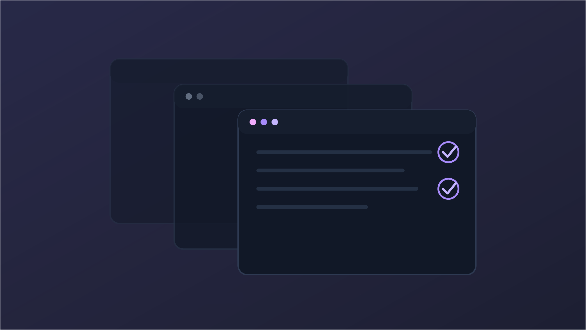

Estudo
QA Playwright
Estudo de caso de automação de testes End-to-End desenvolvido com Playwright e TypeScript. O projeto contempla validação de fluxos críticos, organização com Page Object Model (POM), execução cross-browser e geração de relatórios automatizados, seguindo práticas utilizadas em projetos reais de QA Automation.
- Validação automatizada de fluxos críticos de negócio
- Arquitetura de testes escalável com Page Object Model (POM)
- Execução cross-browser e relatórios automatizados
- Playwright
- JavaScript
- GitHub